Personagens!
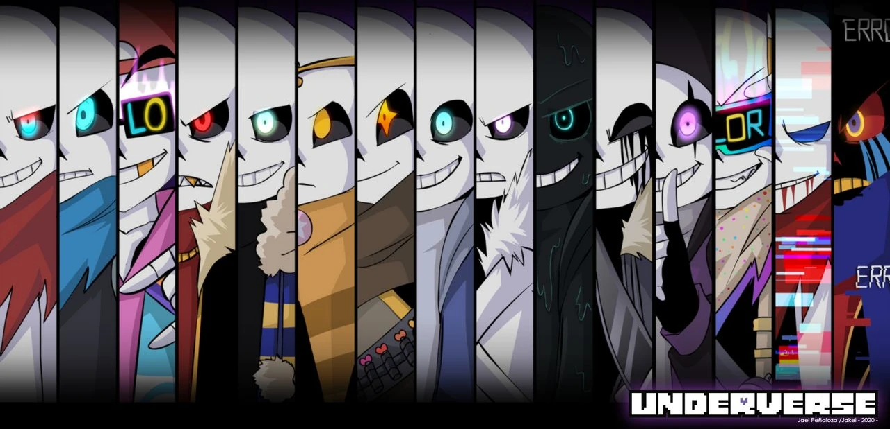| Nome | Status | |
|---|---|---|
.jpg) |
Cross!Sans | Vivo |
| 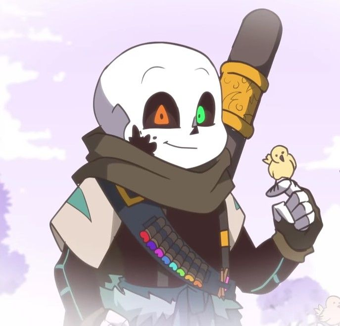 | Ink!Sans🤎 | Vivo |
.jpg) |
Swap!Sans🩵 | Morto |
 |
Fell!Sans | Morto |
| 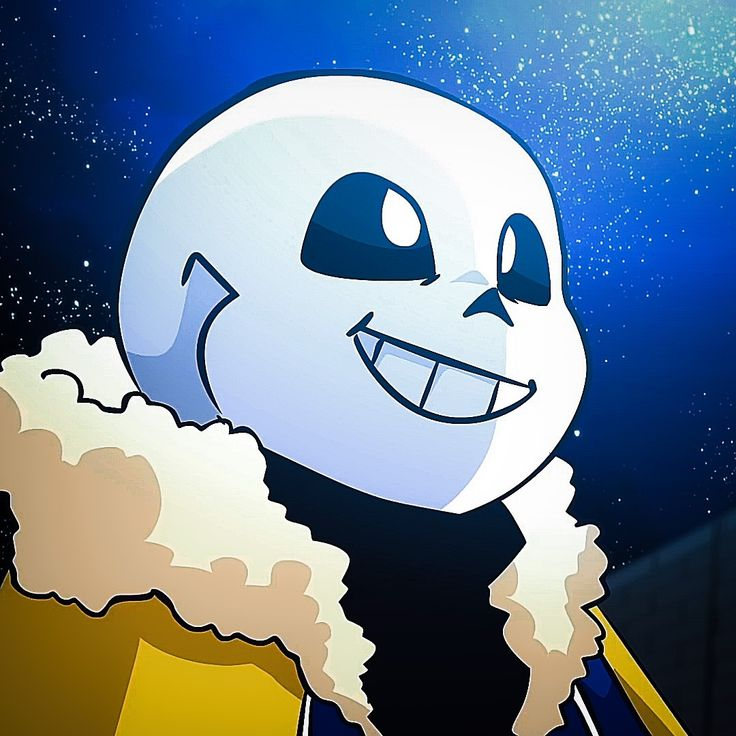 | Outer!Sans | Morto |
| 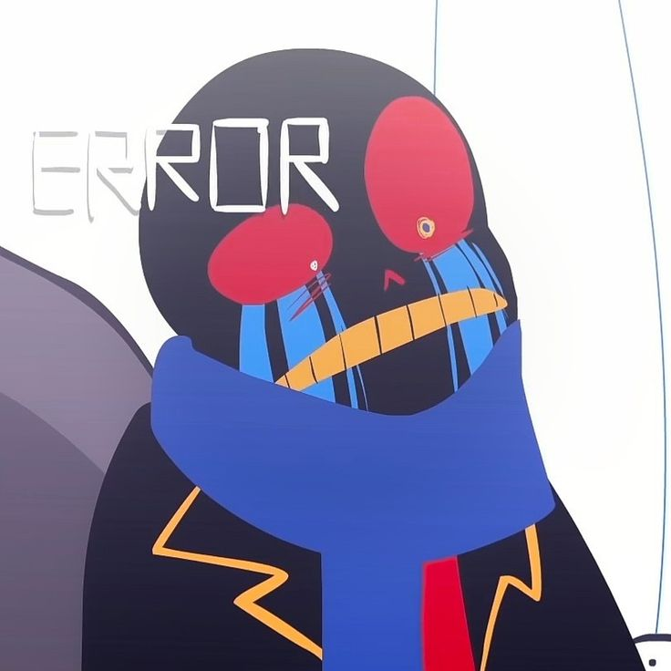 | Error!Sans💙 | Vivo |
.jpg) |
Dream!Sans💛 | Vivo |
| 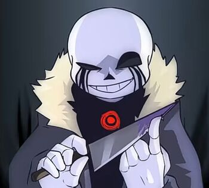 | Killer!Sans🖤 | Vivo |
| 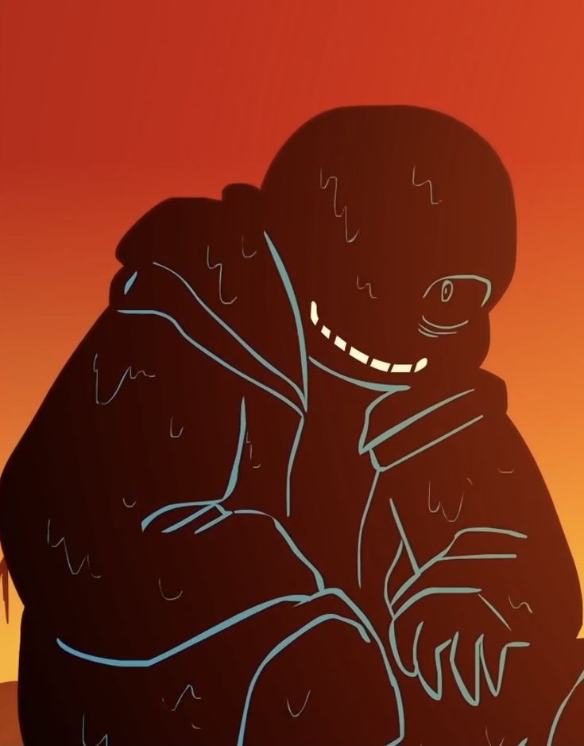 | Nightmare!Sans | Vivo |
 |
Sans | Vivo |
| 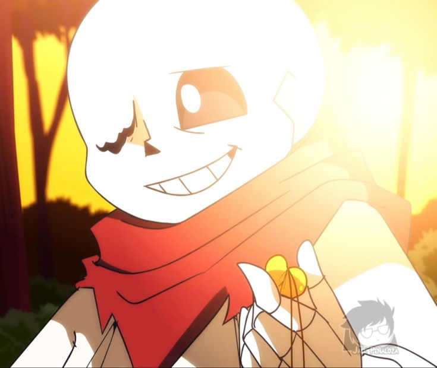 | Geno!Sans | Vivo |
 |
Sans(de Aftertale) | Vivo |
 |
Fatal_Error!Sans | Vivo |
| 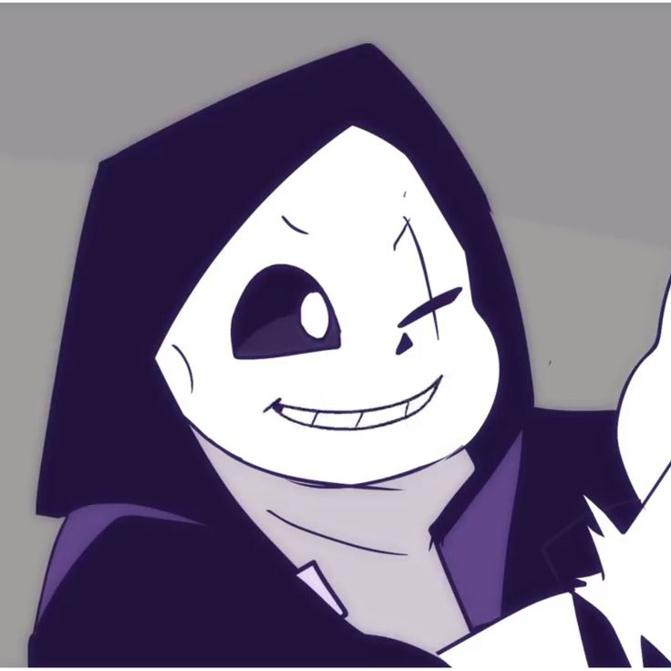 | Epic!Sans | Vivo |
 |
Fresh!Sans | Vivo |
| Nome | Status | |
|---|---|---|
 |
Core!Frisk🩶 | Vivo |
| 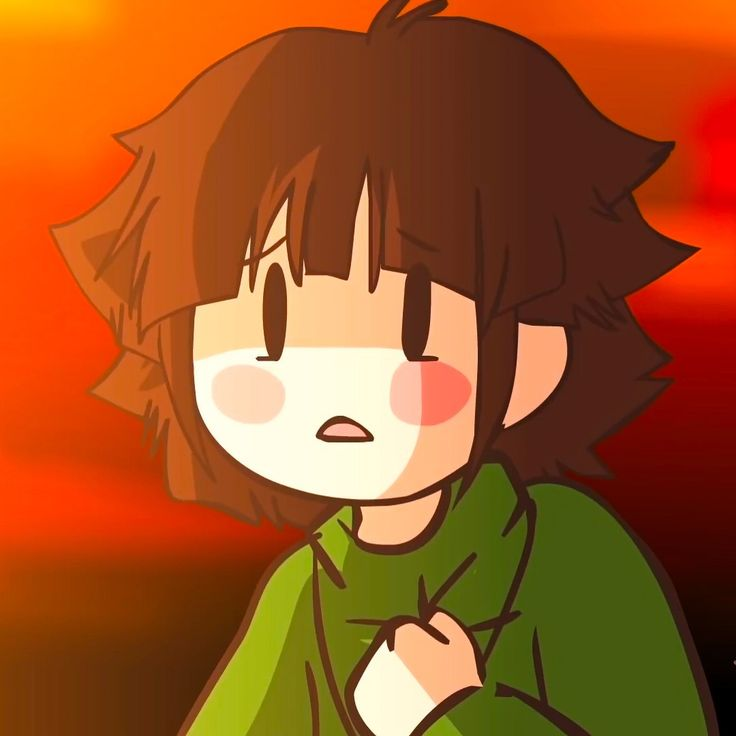 | Underswap!Chara💚 | Morto |
 |
Fresh!Ink | Vivo |
 |
Epictale!Toriel | Vivo |
 |
Underswap!Papyrus | Morto |
| 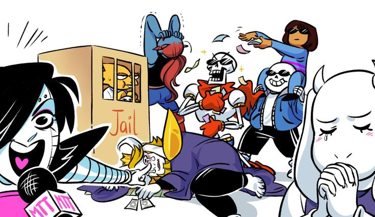 | Elenco de Undertale❤️ | Vivo |
| 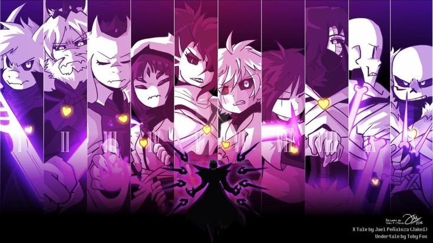 | Elenco de Xtale | Vivo |